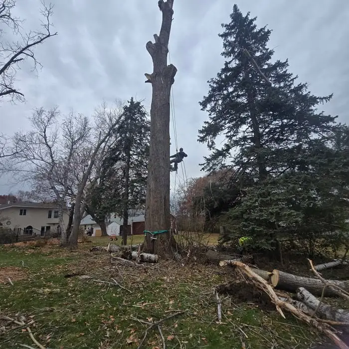

Tree Removal
Dead, leaning or unwanted trees taken down safely, with full cleanup.
A tree on the roof, a split trunk leaning over the driveway or limbs hanging in the yard. Call now and we will get a crew to you as fast as we can.
If a tree is touching a power line, stay well away and call 911 or your electric utility first. Do not try to move branches yourself. Once the line is safe, call us at (763) 785-9779.

Blaine sits on flat ground in Anoka County, with a lot of large, older trees in established neighborhoods. Summer thunderstorms often bring straight-line winds that snap silver maples, cottonwoods and dead ash trees. In winter, ice storms and heavy wet snow load branches until they break, often onto roofs and power lines. Trees weakened by emerald ash borer are especially likely to fail in these events. If you have dead ash trees on your property, see our ash tree removal page before the next storm.
We document the job with photos and give you a detailed written invoice that you can submit to your insurance company. Coverage depends on your policy. In general, insurers often help pay when a tree falls on a covered structure like your house or garage, and may not cover a tree that fell in the open yard without hitting anything. Check with your agent about your specific policy.
Most storm failures come from trees that already had a problem: dead limbs, decay, a weak fork or an ash tree killed by EAB. A trimming visit or a planned removal costs much less than an emergency call, and it can be scheduled when the ground is frozen and your lawn is protected.
Yes. For storm emergencies, call (763) 785-9779 any time, day or night.
Many homeowner policies help cover removal when a tree damages a covered structure. Take photos before anything is moved and call your insurer. We provide a detailed invoice for your claim.
The utility must make the line safe first. Call 911 or your electric utility, stay away from the line, and call us once it is cleared.
Emergency work at night or during a storm can cost more because of the risk and urgency. We give you the price before we start.
Call or text for a free, no-obligation quote. We serve homeowners all across Blaine, MN.